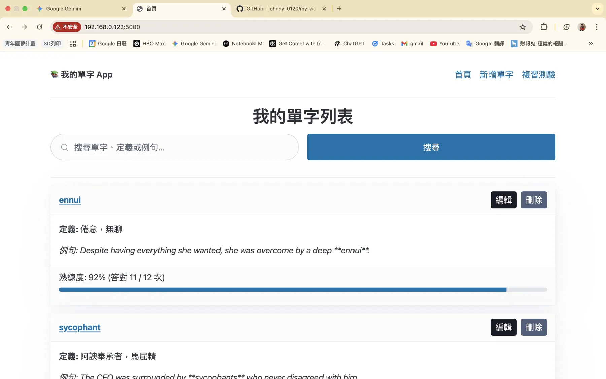
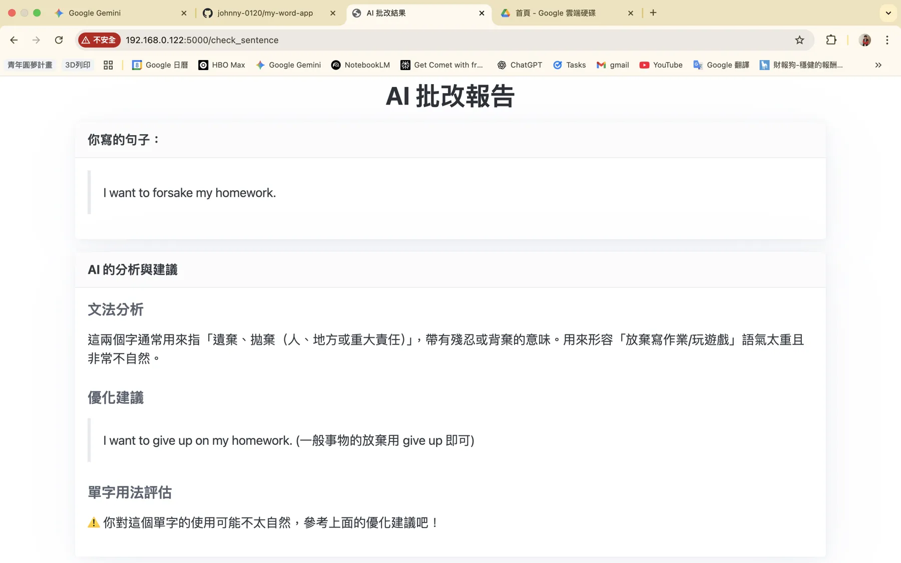
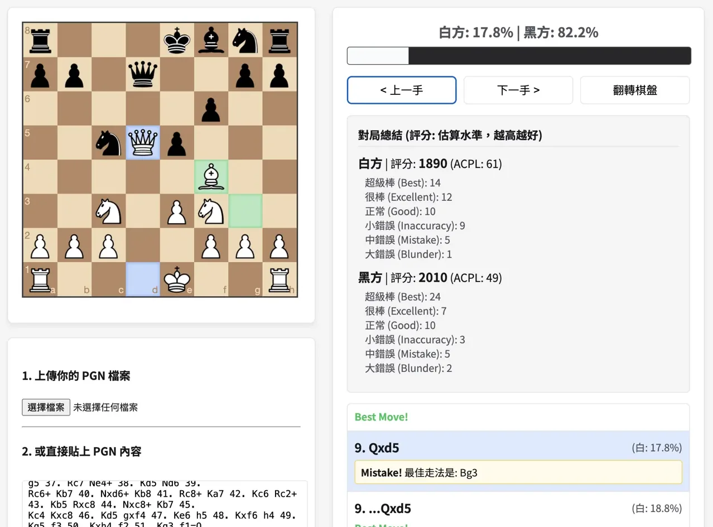
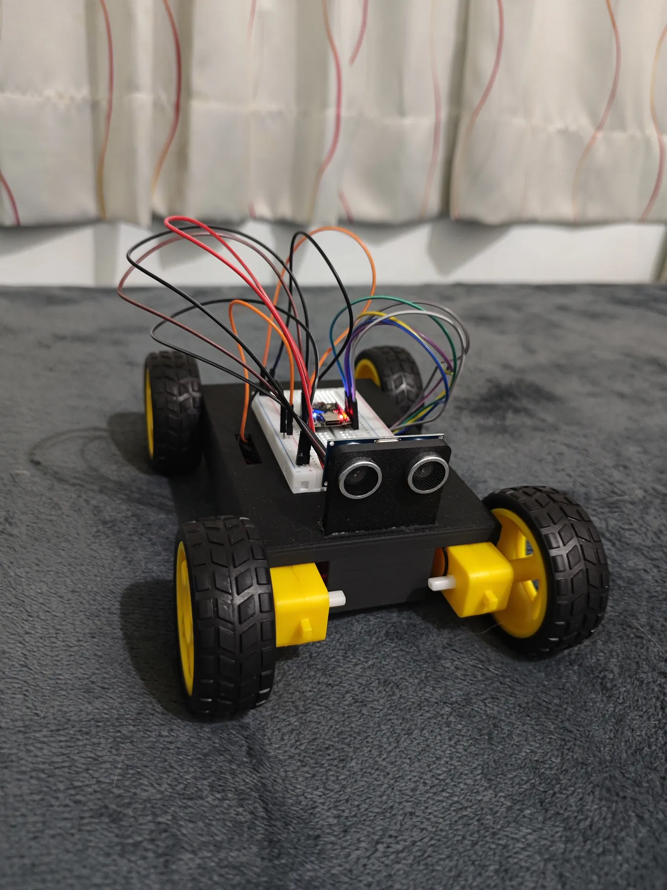
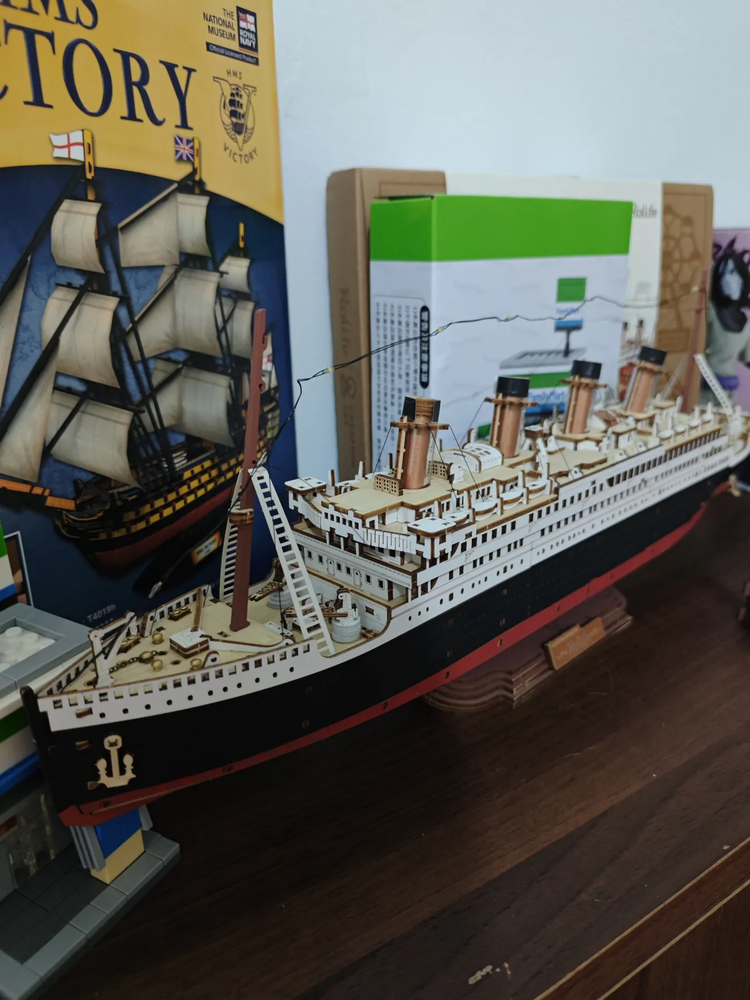
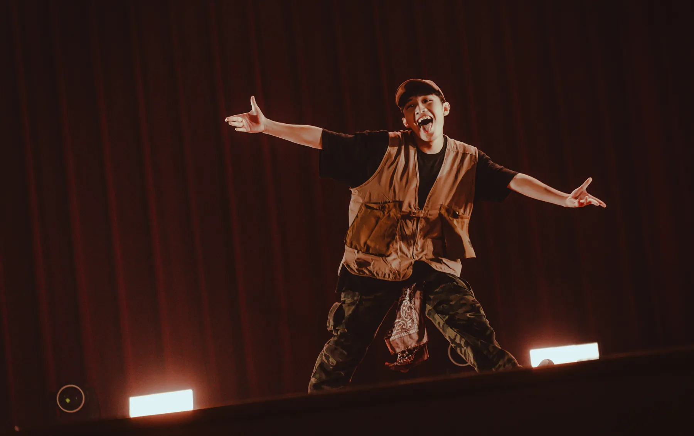
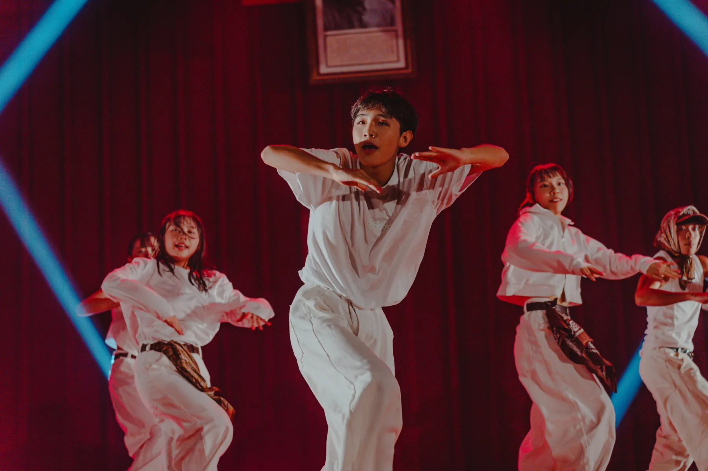
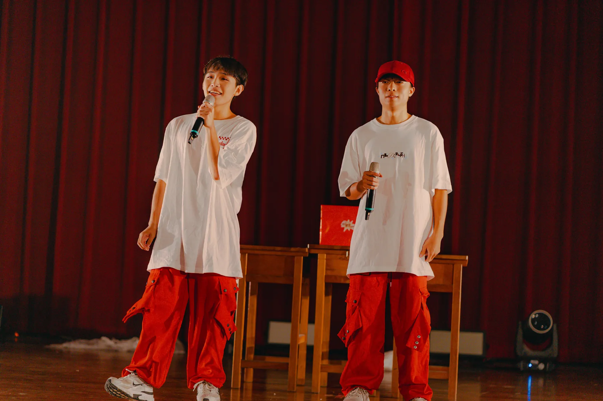

做東西
因為自己背單字很痛苦，就做了一個 AI 英文單字網站。也做過西洋棋復盤工具、LINE 小幫手、ESP32 小車和 3D 列印的收納盒。
Johnny · 中原大學 智慧運算與大數據學士班
我寫程式、做硬體、跳舞，也會拿起麥克風主持。 最在意的一件事是：把模糊的想法，做成別人看得見的東西。
這個網站放了我做過的事，包含還在進行的，和沒成功的。
因為自己背單字很痛苦，就做了一個 AI 英文單字網站。也做過西洋棋復盤工具、LINE 小幫手、ESP32 小車和 3D 列印的收納盒。
熱舞社的活動與教學幹部。上台跳，也在台下排練、企劃成果發表會、處理現場出包。
擔任過丹麥交流活動的英文主持，代表班級做英文簡報。現在是班代，也是 NUVA 校園大使。
按時間排，新的在上面。右邊的標籤告訴你結果：完成 進行中 沒成功
和夥伴一起設計降落機構，從報名做到正式參賽。沒有得獎，但完整跑完一次比賽流程。
把 AI 和創業的主題帶進校園。第一個任務做了「LINE 公事小精靈」：用 n8n 串 LINE 和 AI，自動整理工作訊息、提醒待辦。
擔任隊長，和學長的團隊一起送件，方向是用影像辨識偵測地面彈坑、估算修復需求。
截止當天才發現題目已經有人做過，臨時決定要不要換題。這件事放在下面「沒成功的事」裡細講。
把高中做的單字網站重寫成學生端加老師端，讓老師可以出題、看全班進度。
剛進大學就接下班代，處理全班的大小事。
自己接電路、寫控制程式，加上感測器，做出會動的雛形。過程裡馬達、接線、供電都出過問題。
自己畫、自己印：卡片收納盒、文具收納盒。尺寸印錯就改圖再印。
單字網站結合記憶法和間隔重複，還能用 AI 批改造句。復盤工具幫我回頭看自己下過的棋。
寫完整份海外科技交流企劃、進到面試，最後備取第 2 名。
負責成果發表會企劃、教學、場地和突發狀況。也上台跳了好幾支舞。
用英文主持破冰遊戲和流程，讓兩邊的學生聊得起來。
代表班級參加英文簡報成果發表，上台報告。
每個作品都寫了三件事：為什麼做、做了什麼、現在怎樣。

為什麼：我自己背單字一直忘。
做了什麼：記憶法＋間隔重複排程，加上 AI 批改造句，告訴我哪裡寫錯。
現在：升級成 WordMemo，有老師端，正在找班級試用。

為什麼：只背字義不會用，考作文還是寫不出來。
做了什麼：輸入句子，AI 會指出文法問題並給改寫建議。
現在：併進單字網站裡。

為什麼：下完棋總想知道是哪一步輸掉的。
做了什麼：載入下過的棋局，一步一步回放。
現在：自己下完棋會拿來用。

為什麼：想知道軟體之外，讓東西真的動起來是什麼感覺。
做了什麼：ESP32、馬達、超音波感測器，從麵包板接到能跑。
現在：雛形完成，教學影片沒告訴你的坑我大概都踩過了。
為什麼：桌上的卡片和文具沒地方放。
做了什麼：用 Fusion 360 畫圖，算公差，印出來試蓋子能不能扣上。
現在：放在桌上用。

為什麼：純粹喜歡慢慢組東西。
做了什麼：零件一片一片拼起來。
現在：擺在書桌上。
寫程式的時候我很安靜，
上了台就不是了。



當熱舞社幹部學到的事：表演那幾分鐘之外，還有企劃、借場地、排練和各種臨時狀況。
現在遇到專案出包，我比較不會慌。
不是每件事都有好結果。這些是我覺得最值得記下來的。
青年百億海外圓夢計畫，備取第 2。
我花了很久寫海外科技交流的企劃，也練了面試，最後差一步沒上。原本計畫出國拍的短影音也就沒了。
後來：我沒等出國，直接開始做短影音，練選題、拍攝和剪輯。企劃不一定要等到被選上才開始。
創天下競賽，截止當天發現撞題。
送件那天才搜到，我們想做的道路檢測平台，市面上已經有人做出來而且在用了。
後來：現在開始一個題目之前，我會先花一小時查有沒有人做過。這一小時比最後一天慌張改題划算很多。
ESP32 小車，照著教學做還是動不了。
接線、供電、馬達驅動都出過錯，有一段時間車子就是不動，也找不到原因。
後來：學會一次只改一個地方、一個一個排除。這個習慣後來寫程式除錯也一直在用。
火星競賽，沒有得獎。
降落的設計討論了很多版，真的做出來還是有很多沒想到的地方。
後來：知道「設計好」跟「做出來能用」中間差了很多次測試，下次會更早開始實測。
點照片可以放大。
想一起做點什麼，
或只是想聊聊，都可以找我。